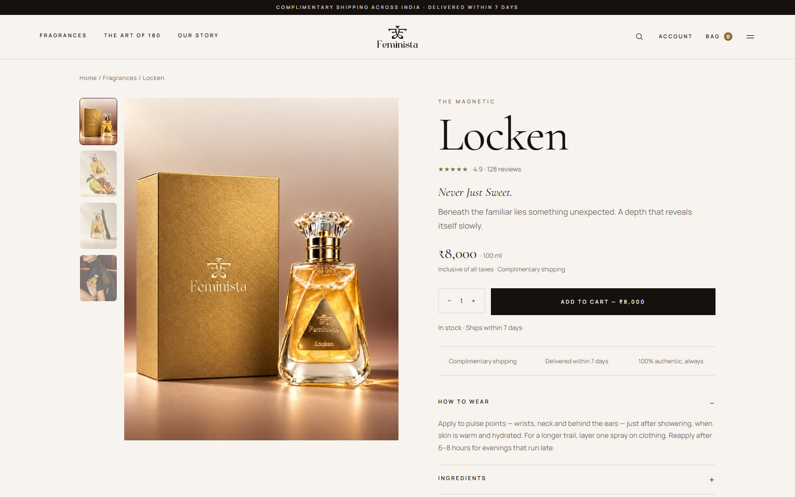
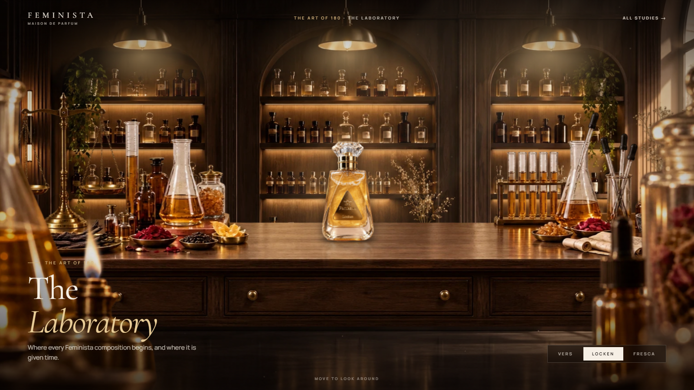
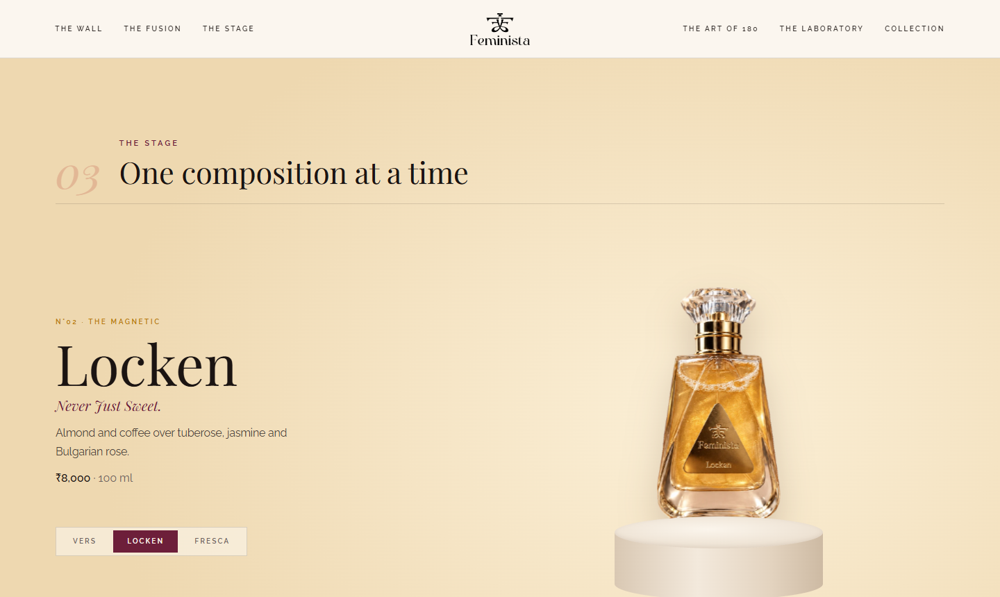
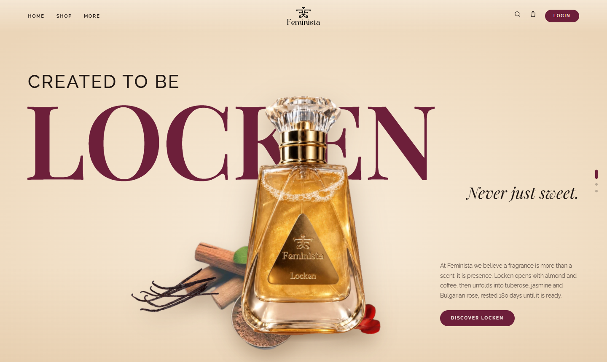

Seven studies
Three bottles in lit niches of basalt. Hover for light, click to come closer.
Every note flies in, circles the bottle, then pours inside as light and fuses into one.
One perfume at a time on a stone stage, its notes fusing in while the scene changes behind it.

The full Feminista demo site: the spotlight wall as hero, the original content and pages, and the Art of 180 lab.

Step into the Feminista laboratory: real photographs set at real depths, a camera that walks in as the lamps come on, and a bottle waiting on the bench.

The six studies one after another, retold in the brand kit: the wall, the fusion, the stage, the Art of 180, the laboratory and the collection. Light, quiet, with a little depth.

A three-screen landing page in the brand kit: one Locken bottle glides from the hero, onto its disc in the collection, to the features, while each screen's words blur in and out.